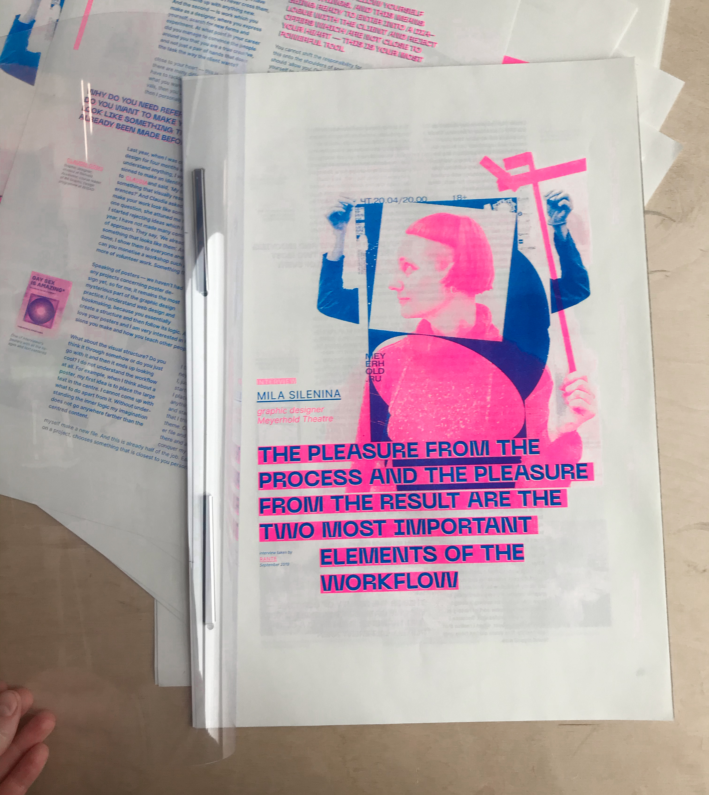
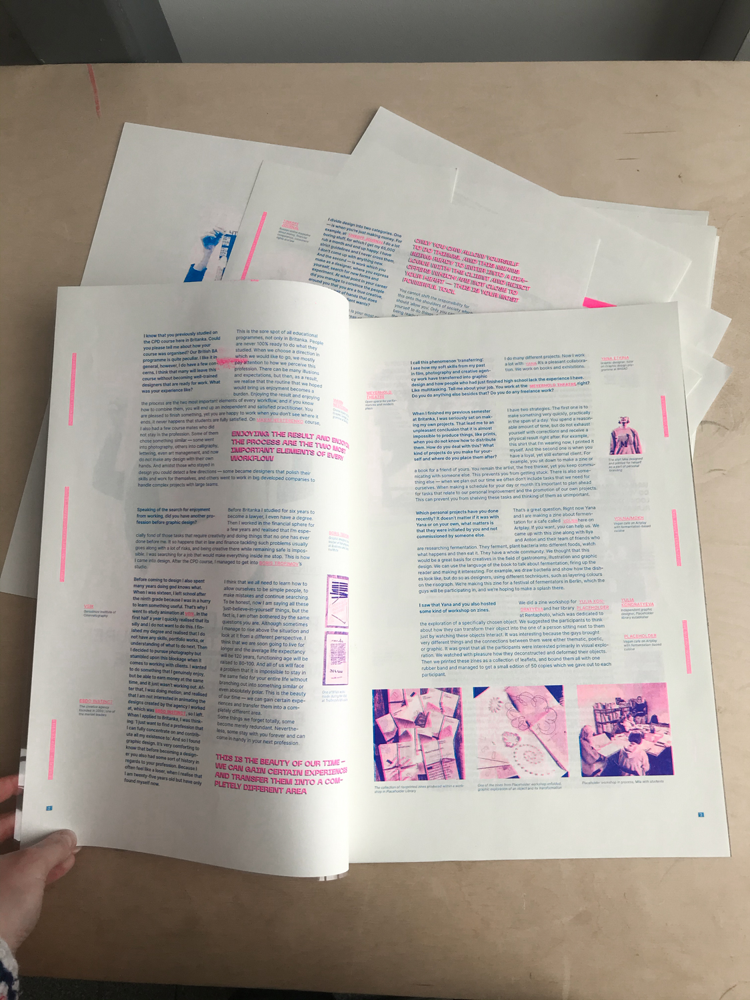
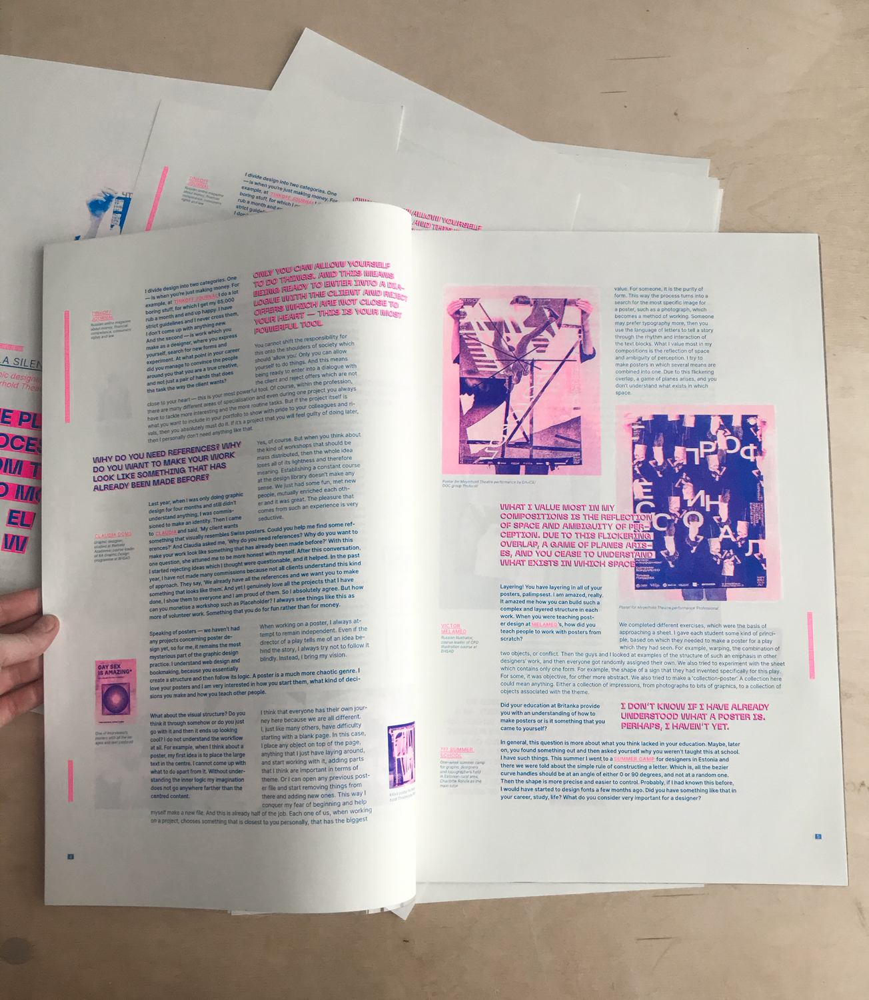
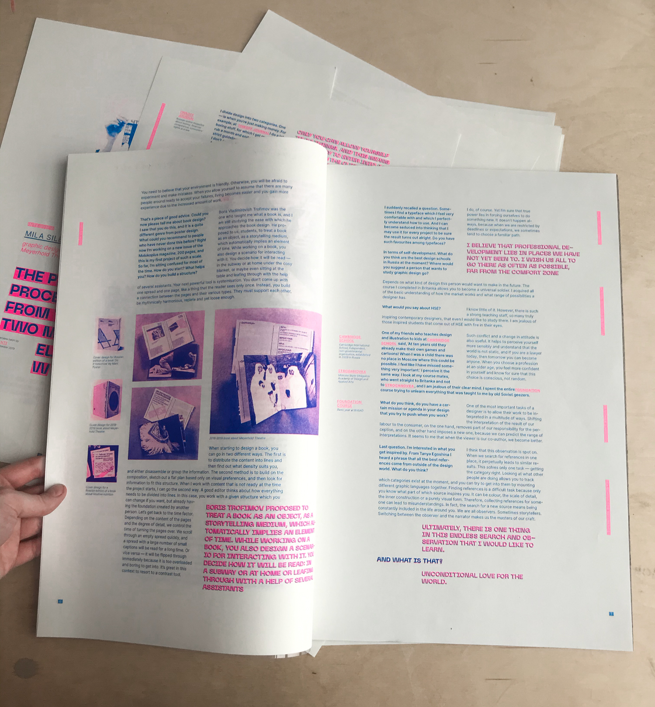

Portraits of People
← back
2019
7th December
   
I should give one copy to Mila! Binding is questionable, but it was the only feature I couldn't choose. Meanwhile it is still a mystery how to risoprint products for reading, because the paint smears even after several days...
17:08